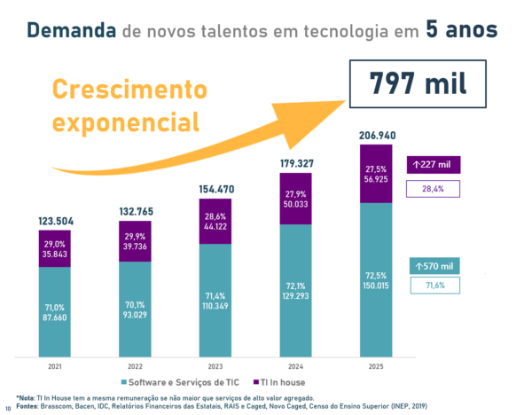

TSI
Um curso de Sistemas para Internet é um programa educacional que visa capacitar os estudantes na área de desenvolvimento web e sistemas online. Ele abrange conhecimentos teóricos e práticos relacionados à criação, implementação e manutenção de aplicativos, websites e sistemas interativos para a internet. Durante o curso, os alunos aprendem linguagens de programação, design de interfaces, banco de dados, segurança digital, entre outros tópicos relevantes para o desenvolvimento de soluções web. O objetivo final é formar profissionais aptos a criar e gerenciar sistemas online eficientes, seguros e intuitivos, atendendo às demandas do mercado de tecnologia.
saiba mais
O Crescimento Exponencial da Área da Tecnologia
A área da tecnologia está em constante crescimento, impulsionada pelo avanço das inovações e pela demanda por soluções digitais. Startups têm revolucionado setores tradicionais, enquanto a inteligência artificial e a Internet das Coisas transformam a forma como vivemos e trabalhamos. A demanda por profissionais qualificados em programação, segurança cibernética e análise de dados está em alta. A educação acompanha essa realidade, oferecendo cursos voltados para as áreas tecnológicas. Além disso, a tecnologia tem melhorado a qualidade de vida, com aplicativos e plataformas digitais que facilitam o dia a dia das pessoas. Esse crescimento traz oportunidades, estimula a inovação e cria empregos. Aqueles que se adaptam e se capacitam têm um futuro promissor nesse cenário em constante evolução.
